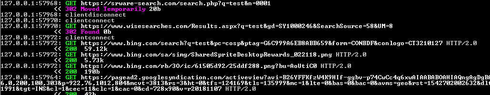

SRWare Iron
SRWare Iron jest darmową przeglądarką internetową i implementacją Chromium stworzoną przez SRWare z Niemiec.
Poziom Oprogramowania Szpiegowskiego: Ekstermalnie Wysoki
SRWare Iron uważa się za przestrzegającą prywatność przeglądarkę internetową będącą alternatywą dla Google Chrome; a dokładnie reklamuje siebie jako przestrzegająca prywatności przeglądarka internetowa która ma dać użytkownikom działanie Chrome bez dodatków szpiegujących Google. Po zbadaniu Iron'a, te twierdzenia przestają być prawdziwe. SRWare Iron łaczy się z bardzo wieloma serwerami przy pierwszym uruchomieniu. Zbiera on około ~400-500 niepożądanych połączeń i parę minut zajęło mu aby zatrzymać tworzenie nowych połączeń. SRWare Iron używa szpiegowskiej wyszukiwarki Bing jako domyślnej, jednak wykracza poza to i przekierowywuje żądania do Bing przez własne serwery więc może przechwytywać twoje wyszukiwania w internecie. Najważniejsze jest to że ta przeglądarka jest kolejną fałszywą inicjatywą dotyczącą prywatności i naprawdę nie jest lepsza od Chrome.
Wersja 69.0.3600.0 SRWare Iron została przetestowana na 64-bitowym Windows 7. Do monitorowania zachowań tego programu użyto MITMproxy, Microsoft Network Monitor 3.4 i Sysinternals ProcMon.
Fałszywa inicjatywa dotycząca prywatności
SRWare Iron twierdzi na swojej stronie że:
"Chrome zachwyca ekstermalnie szybkim renderowaniem stron, lśniącym wyglądem i innowacyjnymi możliwości. Ale jest również krytykowany przez specjalistów ds. Ochrony danych, z powodów takich jak tworzenie unikalnego identyfikatora użytkownika bądź przesyłanie wyszukiwań do Google w celu generowania sugestii. SRWare Iron jest prawdziwą alternatywą. Przeglądarka jest oparta na źródle Chromium i oferuje takie same opcje co Chrome, jednak bez opcji naruszających prywatność." [1]
W rzeczywistości wymieniasz jeden produkt pełny oprogramowania szpiegowskiego na drugi. Tam gdzie oprogramowanie szpiegujące Chroma zostało usunięte, oprogramowanie szpiegowskie Irona je zastępuje. Jaką truciznę wybierasz? Najgorsze jest to że to co ludzie przeczytali na stronie SRWare, uwierzyli w to bez robienia żadnych testów. Przykładowo ten artykuł [web.archive.org] po prostu kopiuje listę porównywawczą z strony Iron bez żadnej analizy by ogłosić ją bezpieczną alternatywą dla Chrome. Najodważniejszą rzeczą jest wspaniały cytat z sekcji najczęściej zadawanych pytań dla Iron Browser:
"Mogę naprawdę sprawdzić czy Iron nie wysyła żadnych prywatnych danych, jak powiedzieliście? Tak, możesz. Są narzędzia takie jak Wireshark, które skanują ruch sieciowy. Nie możemy rozpoznać żadnej rzucającej się w oczy aktywności. Ale ty możesz potwierdzić to własnoręcznie." [2]
Co jest wspaniałą perłą w kontekście tego co faktycznie można znaleźć podczas przeprowadzania testów programu.
Ogromna ilość połączeń przy pierwszym uruchomieniu
Kiedy uruchomisz pierwszym razem SRWare Iron, ono natychmiast odwiedzi podane strony: https://iron.start.me/us i
https://www.srware.net/en/software_srware_iron.php. Najbardziej natarczywą stroną jest domena start.me
która zaczyna ładować ogromną ilość złośliwego oprogramowania z internetu. Dokładnia ilość żądań nie została przeze mnie policzona
ale to było gdzieś w zakresie 400-500 żądań (moje oprogramowanie nie oferuje dużej automatyzacji... lub też nie używam go tak dobrze
jak to jest możliwe). To zdjęcie (przy 1.06MB - prawie 1/4 wielkości strony w momencie pisania!)
powinno dać tobie do myślenia o ilości żądań które mnie zasypały. Upłynęło trochę czasu do zakończenia otrzymywania żądań. W następnych
uruchomieniach ilość żądań była mniejsza. Iron łączy się do szpiegowskich platform takich jak Google Analytics i Piwik oraz wykonywuje
własne skrypty JavaScript. Są tu wiele niepotrzebnych połączeń do Google Analitics więc prawdopodobnie to znaczy że wiele firm może
wysłać własne skrypty analityczne za pośrednictwem strony głównej. W ten sposób dokładnie pobiera twój ruch i profiluje twoją przeglądarkę
i komputer w momencie w którym zaczynasz przeglądać internet z twoją nową "szanującą prywatność" przeglądarką aby te wszystkie firmy
reklamowe mogły cię śledzić wszędzie gdzie jesteś!
Podczas sprawdzania połączenia przeglądarki w Network Monitor 3.4, można zobaczyć że łączy się z dużą ilością serwerów, mimo że łączyła się z tylko dwiema domenami. Ten zrzut ekranu nie ukazuje wszystkich adresów IP z którymi się połączono, ale powinien dać ci do myślenia.
Żeby nie było żadnej niejasności, to powiadomienie jest pokazywane kiedy włączysz stronę główną:
"Używamy cookies do personalizacji treści i reklam, zapewniania funkcji sieci społeczenościowych i analizowania naszego ruchu. Udostępniamy także informacje na temat używania naszej strony naszym partnerom w zakresie mediów społecznościowych, reklamy i analizy, którzy mogą je łączyć z innymi informacjami które zostały im przekazane przez użytkownika bądź też które zostały zebrane w wyniku korzystania z ich usług."
Tylko po to żeby nie było wątpliwości - dostajesz śledzące cookies przez firmy reklamowe.
Przekierowywanie wyszukań internetowych przez domenę programistów
Po tym jak twoja przeglądarka zostanie zidentyfikowana przez każdą szpiegującą firmę, możesz zacząć przeglądać internet z twojej nowej przeglądarki SRWare Iron. Domyślna wyszukiwarka to szpiegujący Bing. Jednak, nie wystarczy wskazać tylko na szpiegowską wyszukiwarkę... gdy spróbujjesz wyszukać na Bing, to się właśnie dzieje:

W zasadzie, za każdym razem kiedy wyszukujesz przez tą przeglądarkę, twoje wyszukiwania są wysyłane przez serwery
programistów. Więc, programiści przeglądarki tym sposobem mogą znać twoją historię przeglądania. Twoje wyszukiwania
są także wysyłane przez wisesearches.com, ale nie wiem kim oni są. Więc teraz zamiast dawać twoją historię
wyszukiwania do jednej szpiegowskiej firmy - Google, możesz dawać aż trzem szpiegowskim firmom przechodząc do tej przeglądarki.
To jest bardzo podobna taktyka do tej używanej przez szpiegowską przeglądarkę Slimjet,
gdzie przekierowywuje zapytania z Bing przez własne domeny.
Cel programistów SRWare Iron?
Jeśli zagłębisz się w proces powstawania SRWare Iron, możesz znaleźć kilka interesujących informacji od niektórych programistów Chrome o celach stworzenia tego forka. A dokładniej - ta bardzo ciekawa konwersacja:[3]
Więc to może rozwiać wątpliwości... motywacją istnienia tej przeglądarki jest zarabianie na prywatności przez generowanie ruchu do strony Iron'a, gdzie on może robić pieniądze przez serwowanie szpiegowskiego oprogramowania użytkownikom, tym samym którzy chcieli od szkodliwego oprogramowania uciec. Potem jego fork zostaje naładowany całego sortu szpiegowskim oprogramowaniem od innych firm... z których pewnie też zarabia trochę pieniędzy. (po co inaczej miałby poświęcać czas na integrowanie tego wszystkiego z jego przeglądarką? Możemy tylko spekulować.) W końcu jest całkiem jasne że ta przeglądarka to ogromny przekręt i nie powinno się jej używać.